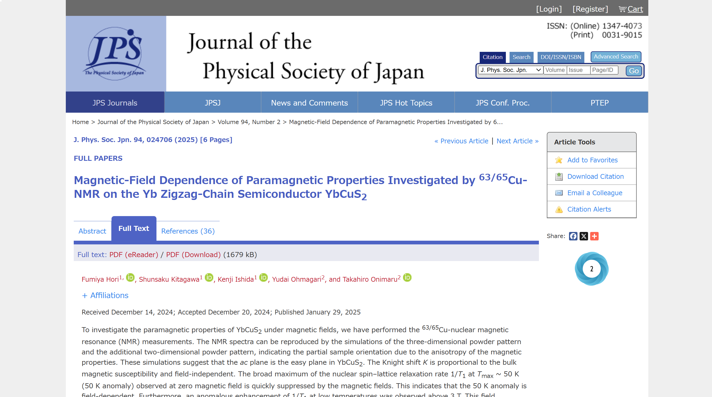
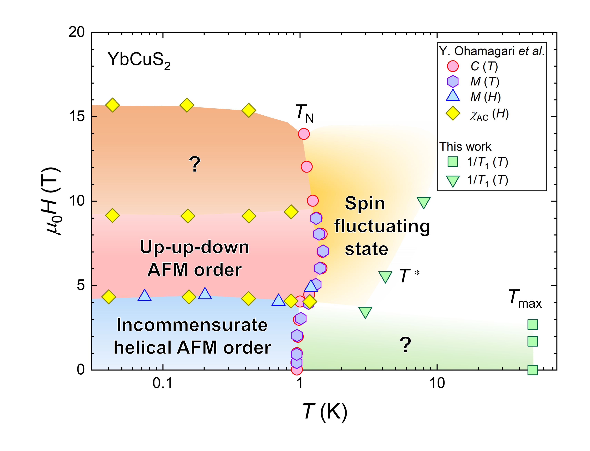
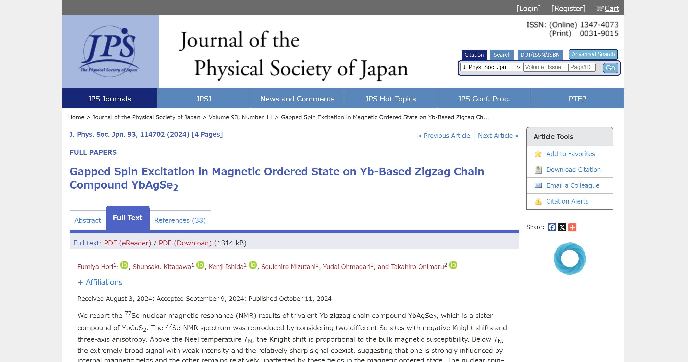
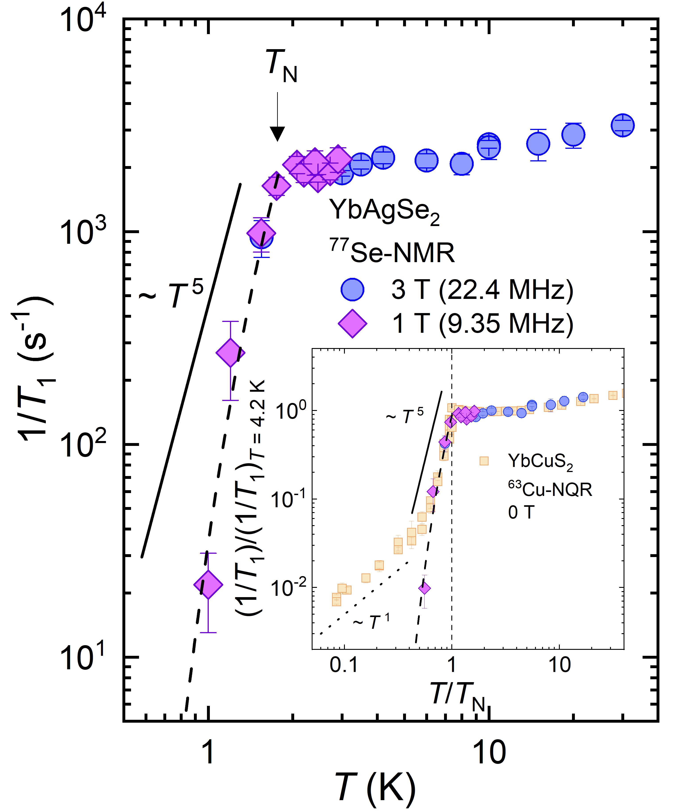
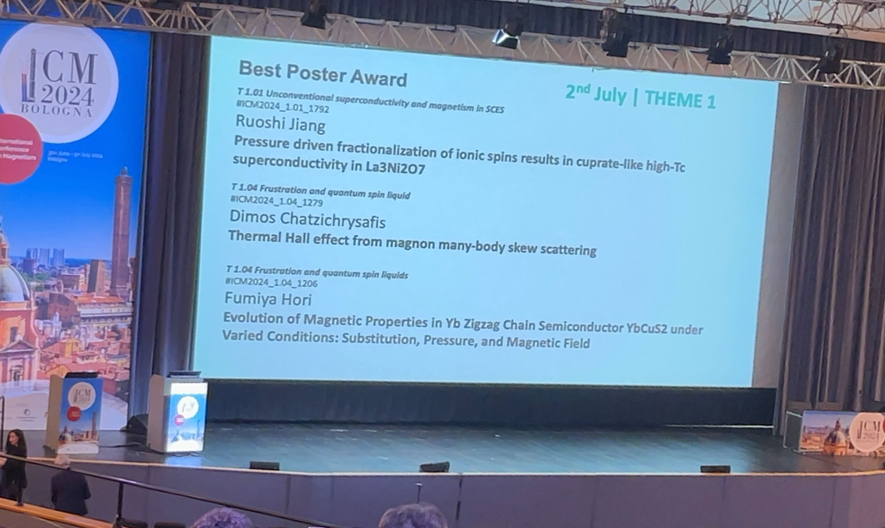
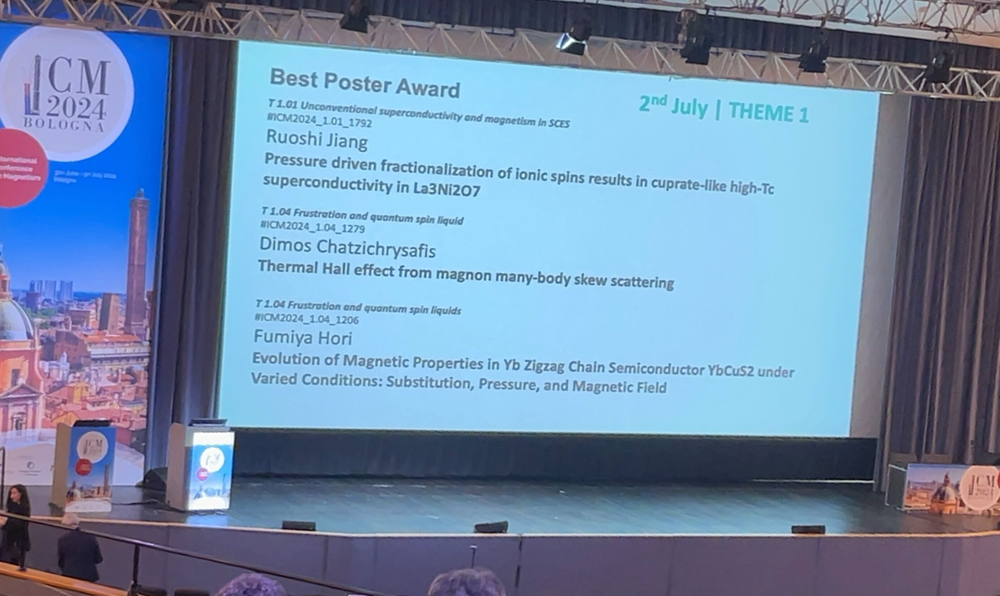

◆Apr 01, 2025 I have joined the Macroscopic Quantum Phenomena Laboratory
at Tohoku University as an assistant professor.◆Mar 17, 2025 Our paper on NMR measurements in YbCuS2 was ranked among Top 20 Most Downloaded Articles -- February 2025 in the Journal of the Physical Society of Japan.
◆Jan 29, 2025
Our paper on NMR measurements in the Yb zigzag-chain semiconductor YbCuS2 has been published in the Journal of the Physical Society of Japan.


◆Dec 24, 2024 Our paper about Lu/Se substitution effects on the Yb zigzag-chain semiconductor YbCuS2 has been published in the arXiv.
◆Dec 23, 2024 Our paper on NQR measurements in the Yb zigzag-chain semiconductor YbCuS2 under pressure has been published in the arXiv.
◆Dec 17, 2024 Our paper on NMR measurements in YbAgSe2 was ranked among Top 20 Most Downloaded Articles -- November 2024 in the Journal of the Physical Society of Japan.
◆Nov 15, 2024 Our paper on NMR measurements in YbAgSe2 was ranked among Top 20 Most Downloaded Articles -- October 2024 in the Journal of the Physical Society of Japan.
◆Oct 11, 2024
Our paper on NMR measurements in the Yb zigzag-chain semiconductor YbAgSe2 has been published in the Journal of the Physical Society of Japan.


◆Jul 03, 2024
I received the Best Poster Award at International Conference on Magnetism 2024 (ICM 2024) held in Bologna, Italy!
 



\begin{align}
\mathcal{H} =\mathcal{H}_{\mathrm{Z}}+\mathcal{H}_{\mathrm{Q}}
&= -\frac{\gamma}{2 \pi} h (1+K) \boldsymbol{I} \cdot \boldsymbol{H} \nonumber \\
&+\frac{h \nu_{z z}}{6}\left\{\left(3 I_{z}^{2}-I^{2}\right)+\frac{1}{2} \eta\left(I_{+}^{2}+I_{-}^{2}\right)\right\} \\
\frac{1}{T_{1}}=\frac{2 \gamma_{n}^{2} k_{B} T}{\left(\gamma_{e} \hbar\right)^{2}}
\sum_{\boldsymbol{q}}\left|A_{\boldsymbol{q}}\right|^{2} \frac{\operatorname{Im} \chi_{\perp(\boldsymbol{q}, \omega)}}{\omega} \\
\chi_{z}^{\mathrm{CEF}} =\frac{g_{J}^{2} \mu_{\mathrm{B}}^{2}}{k_{\mathrm{B}} T Z}&\left[\sum_{n, m}^{D}\left|\left\langle n\left|J_{z}\right| m\right\rangle\right|^{2} \exp \left(-\frac{E_{n}}{k_{\mathrm{B}} T}\right)\right]-\frac{g_{J}^{2} \mu_{\mathrm{B}}^{2}}{k_{\mathrm{B}} T Z^{2}}\left[\sum_{n, m}^{D}\left\langle n\left|J_{z}\right| m\right\rangle \exp \left(-\frac{E_{n}}{k_{\mathrm{B}} T}\right)\right]^{2} \\
&+\frac{2 g_{J}^{2} \mu_{\mathrm{B}}^{2}}{Z}\left[\sum_{n, m}^{N D}\left|\left\langle n\left|J_{z}\right| m\right\rangle\right|^{2} \frac{1}{E_{m}-E_{n}} \exp \left(-\frac{E_{n}}{k_{\mathrm{B}} T}\right)\right]
\end{align}